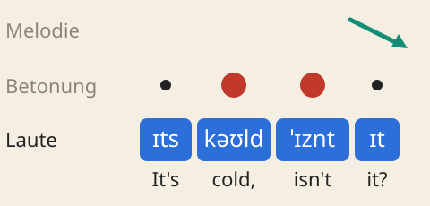

Fragst du wirklich?
Mit einem KI-Tutor lernen
Ein KI-Tutor erklärt dir diese Seite und hilft dir bei den Aufgaben. Wähl deinen Assistenten:
Mit Claude öffnen Mit ChatGPT öffnen Mit Mistral Vibe öffnen
Du nutzt dein eigenes Konto beim Anbieter. Der Assistent ist kein Angebot von lernapps.net: lernapps liefert nur Inhalte und Aufgaben. Die Wahl gilt für alle Seiten, nur auf diesem Gerät.
Der Test am Freitag
Sophie und Ellie schreiben sich abends. Du kennst question tags und den Pfeil für die Melodie. Jetzt lernst du, dass dasselbe Anhängsel zwei Bedeutungen haben kann, je nachdem, wohin die Stimme geht.
Aufgabe
Lösung
Sie steigt. richtige Antwort
So fragt man mit Ja oder Nein.
Sie fällt.
Das gilt bei Aussagen.
Sie bleibt gleich.
Die Stimme bewegt sich am Ende.
Bei einer Frage mit Ja oder Nein steigt die Stimme am Ende.
Mehr dazu: Lernlandkarte Englisch · Satzmelodie bei question tags
Das kannst du danach: Du erkennst am Pfeil, ob jemand mit einem question tag wirklich fragt oder Zustimmung erwartet, und zeigst es selbst.
Der Chat
| Englisch | Deutsch |
|---|---|
| tag | das Anhängsel am Satzende |
| agree | zustimmen |
| lesson | die Unterrichtsstunde |
| really ask | wirklich fragen |
Sophie: hey Ellie! you're online, aren't you?
Ellie: yes. why?
Sophie: I don't know when the test is. It's on Friday, isn't it?
Ellie: yes, Friday, first lesson.
Sophie: oh no. and it's so cold today, isn't it?
Ellie: haha, Sophie. you don't want an answer! you only want me to agree.
Sophie: true! you feel it too
Ellie: Mr Hill says: if you really ask, your voice goes up on the tag. if you want agreement, it goes down.
Aufgabe
Lösung
Bei der Frage nach dem Datum des Tests richtige Antwort
Sie weiß nicht sicher, wann der Test ist.
Bei der Bemerkung über die Kälte
Dass es kalt ist, weiß sie schon.
Bei dem Satz „you feel it too“
Das ist keine Frage.
Beim Testtag fragt Sophie wirklich.
Mehr dazu: Lernlandkarte Englisch · Satzmelodie bei question tags
Aufgabe
Lösung
Ellie: Mr Hill says: if you really ask, your voice goes up on the tag. if you want agreement, it goes down. richtige Antwort
Hier stehen beide Fälle.
Ellie: yes, Friday, first lesson.
Das ist die Antwort auf Sophies Frage.
Sophie: true! you feel it too
Das ist Sophies Antwort auf Ellies Spott.
Ellie nennt beide Fälle.
Mehr dazu: Lernlandkarte Englisch · Satzmelodie bei question tags
Der Pfeil am question tag
Ein question tag hängt an einer Aussage: It's cold, isn't it? Die Melodie am question tag zeigt, was du willst. Steigt die Stimme, fragst du wirklich. Fällt sie, erwartest du Zustimmung. Das Bild zeigt beide Fälle mit denselben Wörtern.
Der Pfeil steigt: Du weißt es nicht sicher und fragst wirklich.
Quelle: eigene Zeichnung. Lizenz: CC-BY-4.0.
Der Pfeil fällt: Du weißt es schon und erwartest Zustimmung.
Quelle: eigene Zeichnung. Lizenz: CC-BY-4.0.Die Stimme in dieser App kann diesen Unterschied nicht vorsprechen. Darum gibt es hier keine Aufnahme. Hör zu, wie echte Sprecherinnen und Sprecher sprechen, zum Beispiel in einem englischen Video, und achte auf den Pfeil.
Merke
- Steigt die Stimme am question tag, fragst du wirklich.
- Fällt die Stimme am question tag, erwartest du Zustimmung.
- Die Wörter bleiben gleich. Nur die Melodie ändert die Bedeutung.
- Im Text steht vor dem Tag ein Komma. Wie in Kapitel 4 zeigt es eine kleine Pause.
Übung
Aufgabe
Lösung
Sie steigt. richtige Antwort
Amir fragt wirklich.
Sie fällt.
Fallen würde heißen, dass er es schon weiß.
Sie bleibt gleich.
Die Stimme bewegt sich am Ende.
Wer wirklich fragt, lässt die Stimme steigen.
Mehr dazu: Lernlandkarte Englisch · Satzmelodie bei question tags
Aufgabe
Lösung
Richtige Antwort: 2
Bei Ellie und Peter fällt die Stimme, bei Amir steigt sie.
Mehr dazu: Lernlandkarte Englisch · Satzmelodie bei question tags
Aufgabe
Lösung
Peter sieht ein tolles Tor und sagt: „That was a great goal, wasn't it?“ richtige Antwort
Er erwartet Zustimmung.
Mrs Parker probiert den Kuchen und sagt: „It's delicious, isn't it?“ richtige Antwort
Sie erwartet Zustimmung.
Sophie weiß nicht, ob Ellie kommt, und fragt: „You're coming, aren't you?“
Sie fragt wirklich.
Amir ist nicht sicher, ob Mr Hill da ist, und fragt: „He's here today, isn't he?“
Er fragt wirklich.
Wer es schon weiß, erwartet Zustimmung.
Mehr dazu: Lernlandkarte Englisch · Satzmelodie bei question tags
Aufgabe
Schreibe den englischen Satz mit question tag.
Tipp
Das Tag wiederholt das Hilfsverb und das Pronomen.
- Es ist heiß, oder? (Du erwartest Zustimmung.)
- Peter spielt Fußball, oder? (Du fragst wirklich.)
Lösung
- It's hot, isn't it? (auch richtig: It is hot, isn't it?)
- Peter plays football, doesn't he?
Dein Chat
Offene Aufgabe
Schreibe einen kurzen englischen Chat zwischen zwei Personen mit zwei Sätzen, die ein question tag haben. Bei einem fragt jemand wirklich, beim anderen erwartet jemand Zustimmung. Schreibe auf Deutsch dazu, wohin die Stimme jeweils geht und warum.
Tipp
Weiß die Person es schon?
Eine gute Antwort enthält:
Lösung
A: You've got the key, haven't you? B: I think so. A: Great pizza, isn't it? B: Yes! Beim ersten Satz steigt die Stimme, weil A es nicht weiß. Beim zweiten fällt sie, weil A Zustimmung erwartet.
Rückblick und nächster Schritt
In diesem Kapitel hast du gelernt, welche Silbe und welche Wörter betont werden, wie Wörter zusammenrutschen, warum kleine Wörter leise sind und was die Melodie am question tag verrät.
Fehler gefunden oder eine Idee für diese App?